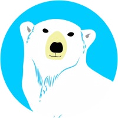
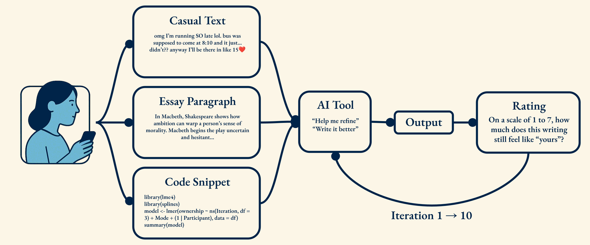
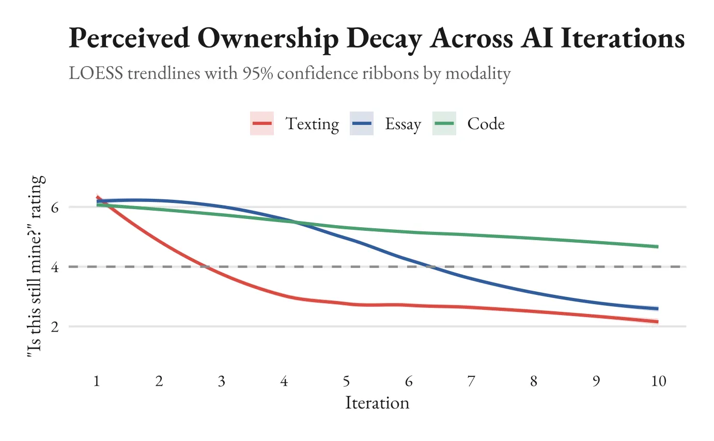

Case study
The Ship of Theseus Paradox in AI-Assisted Writing
Product-facing UX research translating user perceptions of AI authorship
into actionable guidance for AI writing tool design.

Originally published on UX Collective

At a Glance
- Evaluated how repeated AI interventions impact perceived authorship and trust
- Compared behavior across personal, academic, and functional writing contexts
- Identified emotional intimacy as a key moderator of AI acceptance
- Derived UX and product design principles for adaptive AI assistance
Full Case Narrative
AI writing tools have quietly become infrastructure. For many users, they function less like collaborators and more like spellcheck: always on, rarely questioned, woven into the act of writing itself. As these tools fade into the background, concerns about authorship and “losing one’s voice” persist, but remain poorly understood at the level of interface design.
For product teams, this creates a design challenge: how to scale AI assistance without undermining user trust, ownership, or long-term adoption.
This project investigates a deceptively simple question: when does AI assistance stop feeling like help and start feeling like replacement? Drawing on the Ship of Theseus paradox, I examine how repeated AI interventions affect users’ sense of authorship across different writing contexts—and what this means for designing AI-assisted writing tools that respect user autonomy.
Research Question
Framed as a product question:
How does repeated AI rewriting influence perceived authorship, and how should AI writing interfaces adapt across contexts to preserve user trust and control?
- Does perceived ownership decay at the same rate for all types of writing?
- Are users more resistant to AI assistance in emotionally intimate contexts?
- What design implications follow for AI writing interfaces?
Study Design

To explore these questions, I designed a within-subjects experimental study that combined behavioral measures with qualitative follow-up. This design enabled controlled comparison of ownership trajectories while holding individual writing style constant, supporting causal interpretation of context effects.
Participants completed three writing tasks representing distinct writing contexts:
- Casual text (e.g., a message to a friend)
- Essay paragraph (formal, academic writing)
- Code snippet (functional, task-oriented writing)
Each participant wrote an original piece in each category, then passed the text through an AI writing tool of their choice ten consecutive times, with each iteration building on the previous output.
After every rewrite, participants rated the text on a 1–7 scale:
“How much does this still feel like it’s yours?”
This design allowed me to model how perceived ownership changed over time and how that trajectory differed by context.
Methods & Analysis
- Platform: Qualtrics
- Sample: Convenience sample (friends, family, online volunteers)
- Modeling goal: Estimate non-linear decay in perceived ownership across contexts
- Analysis: Mixed-effects modeling in R (
lme4) with natural splines to capture non-linear decay - Supplement: Follow-up interviews to contextualize quantitative patterns
All responses were anonymized and analyzed at the aggregate level. This analytical approach allowed me to translate subjective experience into quantifiable signals relevant for product decision-making.
Key Behavioral and UX Insights

1. Perceived authorship decays, but not uniformly
Across all conditions, perceived ownership declined with repeated AI rewriting. However, the rate and magnitude of decay varied sharply by context.
- Texting: Ownership dropped steeply by iteration 3
- Essay writing: Declined more gradually, crossing the midpoint later
- Code: Remained largely stable across iterations
Participants reached the point where text felt “more AI than me” (below the scale midpoint) at iteration 3 for texting, iteration 7 for essays, and never for code.
2. Emotional intimacy predicts resistance to AI assistance
The more personal the writing, the faster users rejected AI intervention. Text messages (messy, informal, emotionally loaded) were where participants felt most protective. AI edits in this space were frequently described as invasive, even when technically improving the text.
Essay writing occupied a middle ground, while code was treated as almost entirely functional. In this context, AI assistance was often described as welcome or even necessary.
3. Help feels different from replacement
Participants consistently distinguished between AI that supported their intent and AI that substituted their voice. Highly polished outputs sometimes increased discomfort in intimate contexts, reinforcing the feeling of being overwritten.
Interpretation
Resistance to AI writing assistance is not driven by general mistrust of AI quality. Instead, it reflects differences in psychological ownership and emotional risk.
From a systems perspective, AI writing assistance operates along a spectrum of acceptable delegation rather than a binary opt-in/opt-out model.
Writing that functions as identity invites protection; writing that functions as utility invites automation. This produces a gradient of acceptable assistance rather than a binary preference for or against AI.
Product & UX Implications for AI Writing Systems
- Scale assistance with emotional intimacy of the writing context
- Make authorship boundaries visible by showing what changed and why
- Offer granular, reversible control over AI edits
- Avoid dominant tone suggestions in personal writing spaces
- Preserve user voice by default through adaptive style modeling
Why This Matters
As AI writing tools become ubiquitous, users increasingly feel pressure not only to write authentically, but to prove that they did. Respecting psychological ownership is therefore critical not only for usability, but for sustained adoption, retention, and user trust in AI-enabled products.
The future of AI writing UX is about knowing when to finish a user’s sentence and when to leave their typos alone.